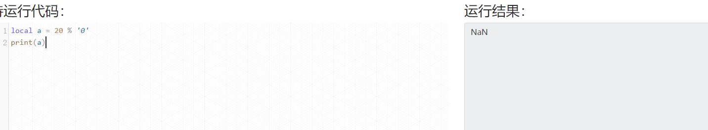
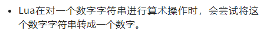
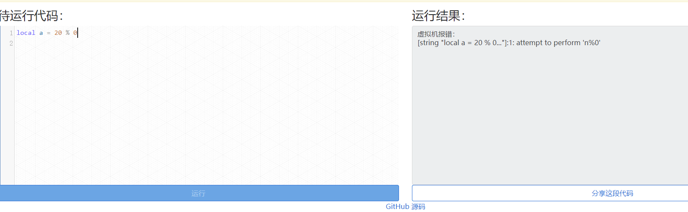

lua删除table中的多个元素
很多时候，我们有这样的需求:删除table中若干符合条件的元素，最原始的想法就是用for遍历一边table，符合条件的用table.remove就可以了
function test1(t)
for i , v in ipairs(t) do
if v.id%3 == 0 then
table.remove(t ,i)
end
end
end
结果证明这是不行的，因为table.remove删除第i元素后，i后面的元素会向前补齐，这样删除前处于i+1的元素就变成了i元素，然后for循环从t中取第i+1个元素，这样就漏掉了第i+1个元素，既然这样不行，很自然的就想到用while循环，可以自由控制“遍历的指针”是否前进，有删除操作，就不前进，否则才前进
代码如下
function test2(t)
local int i =1
while(t[i]) do
if t[i].id%3 == 0 then
table.remove(t , i)
else
i = i + 1
end
end
end
跑一下，很正常！
但是注意table.remove是删除队列中的一个元素，每一次操作都要移动大量元素，性能不会太好，因此可以考虑用临时的table，用来保存没有被删除的元素，最后再让t指向这个table，以空间来换时间，而实际使用中，t中的元素往往是table类型，这样临时的table中只会保存元素的引用，因此占用的空间几乎可以忽略不计。
代码如下
function test3(t)
local newT = {}
for i ,v in ipairs(t) do
if v.id%3 ~= 0 then
table.insert(newT , v)
end
end
t= newT
end
很好奇test3()到底比test2()快多少呢，我测试了一下
t = {}
local n = 10000
for i = 1,n do
table.insert(t ,{id = i})
end
n是10000的情况下：
test2耗时0.234s
test3耗时0.002s
相差非常大。
结论：
删除table中的多个元素，在table较大，且删除操作较频繁时，切忌使用table.remove
LUA-点号和冒号
由于LUA中是模拟类，没有class，
所以这里是使用.号来访问实例的成员
re.SetActive(re, re.activeSelf == false);
而冒号： 则是种语法糖，省略了上面代码中的第一个参数
re:SetActive(re.activeSelf == false);
也就是说：lua中对象.方法，只能找到方法，对象只能是类型，即使传入的是对象，所以等效于确定了单纯的方法！
所以冒号的方法，模拟了对象访问自己方法的思想，但本质不是！
记住：lua没有面向对象！
为什么JSON字符串当中会出现反斜杠?
对table或者对象进行了两次的序列化。说白了就是进行了两次的toJSONString
lua 取余问题
lua 对数字字符串取余


lua 对字符串'0'取余， lua因为是弱语言所以会尝试把上面的字符串'0'转换成数字0，然后去进行取余，但是又不能对0进行取余所以会返回NaN
为啥返回NaN 有可能是这个原因
类型是int时做了判断，为double或者字符串会做转换跳过了前置判断，也就NaN了
lua直接对数字0取余

会直接报语法错误